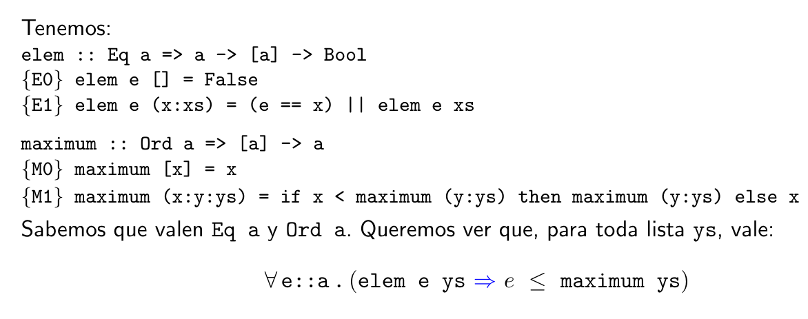

qpq
\[\begin{array}{r} \ length2\ = \ length1\ \\ length2\ \underset{\left\{ L2 \right\}}{=} = \text{ foldr (\textbackslash\_ res } \rightarrow \ 1+res)\ \\ \text{Por extensionalidad, basta con probar }\forall\text{ xs }\ldots\lbrack a\rbrack \\ \text{Por inducción en xs} \\ P\left( \text{xs} \right):\left( \text{foldr (\textbackslash\_ res } \rightarrow \ 1+res)\ 0 \right)\text{ xs } = \ length1\ xs\ \end{array}\]
Caso base:
\[\begin{array}{r} \text{ foldr (\textbackslash\_ res } \rightarrow \ 1+res)\ 0\ \lbrack\rbrack\ \underset{\left\{ F0 \right\}}{=} \\ length1\ \lbrack\rbrack\underset{\left\{ L10 \right\}}{=}0 \end{array}\]
Paso inductivo xs = y:ys:
\[\begin{array}{r} \text{ HI} = P\left( \text{ys} \right)\text{ foldr(\textbackslash\_ res } \rightarrow \ 1+res\ 0)\ ys\ = \ length1\ ys \\ \text{TI}:P\left( \text{y:ys} \right) \end{array}\]
\[\begin{array}{r} \text{ foldr(\textbackslash\_ res } \rightarrow \ 1+res)\ 0\ (y:ys)\ = \ length1\ (y:ys)\ \\ \underset{\left\{ F1 \right\}}{=}\text{ (\textbackslash\_ res } \rightarrow \ 1+res)\ y\ (foldr\ (\backslash\_\ res\ ->\ 1+res)\ 0\ ys) \\ \underset{2\beta}{=}\ 1+foldr\ (\backslash\_\ res\ ->\ 1+res)\ 0\ ys\ \underset{\left\{ \text{HI} \right\}}{=}\ 1+length1\ ys\ \underset{\left\{ L11 \right\}}{=}\ length1\ (y:ys)\square \end{array}\]

Por inducción en ys:
Caso ys = [ ]
P([ ]) = elem e [ ] \(\Rightarrow\) e \(\leq\) maximum [ ]
elem e [ ] \(\underset{\left\{ E0 \right\}}{=}\) False
Por Bool, la implicación es verdadera.
Caso ys = x:xs
HI = P(xs)
qvq \(\forall\) e:: a, elem e (x:xs) \(\Rightarrow\) e \(\leq\) maximum (x:xs)
\(\underset{\left\{ E1 \right\}}{=}\) e == x || elem e xs \(\Rightarrow\) e \(\leq\) maximum (x:xs)
L.G. Bool \(\Rightarrow\) e==x = True \(\vee\) e==x = False
L.G. Listas \(\Rightarrow\) xs = [ ] \(\vee\) xs = z:zs
Caso e==x = True \(\Rightarrow\) xs = [ ]
\(\star \underset{\left\{ \text{Bool} \right\}}{=}\) = True \(\Rightarrow\) e \(\leq\) maximum (x [ ])
\(\underset{\left\{ \text{Bool} \right\}}{=}\) e \(\leq\) maximum (x [ ])
\(\underset{\left\{ M0 \right\}}{=}\) e \(\leq\) x \(\underset{\left\{ \text{Ord (e==x)} \right\}}{=}\) True
Caso e==x = False \(\Rightarrow\) xs = [ ]
\(\star \underset{\left\{ \text{Bool} \right\}}{=}\) elem e [ ] \(\Rightarrow\) e \(\leq\) maximum [ ] \(._{\text{vale por caso base}}\)
Caso e==x = True, xs = z:zs
\(\star \underset{\left\{ \text{Bool} \right\}}{=}\) e \(\leq\) maximum (x:z:zs) \(\underset{\left\{ M1 \right\}}{=}\) e \(\leq\) if x \(<\) maximum (z:zs) then maximum (z:zs) else x
L.G. Bool \(\Rightarrow\) x \(<\) maximum (z:zs) es True o False
Caso True:
e \(\leq\) maximum (z:zs)
Por HI y e==x = True y Bool:
e \(\leq\) maximum (z:zs)